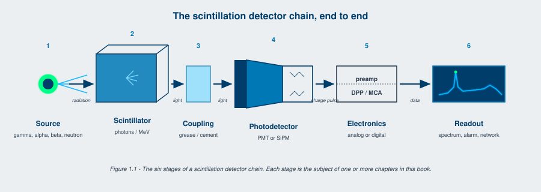

A scintillator is a material that absorbs ionizing radiation and re-emits the absorbed energy as a brief pulse of visible or near-visible light. The amount of light is roughly proportional to the energy deposited. Couple a scintillator to a photodetector that converts those light pulses into electrical pulses, and you have a scintillation detector. Every gamma camera in a hospital, every handheld isotope identifier carried by a customs officer, every well-logging tool in a Permian Basin oil field, and every neutron portal monitor at a port of entry, runs on this idea. The technology is over a century old. The fundamentals are settled. The engineering is not.
The chain that turns an incoming gamma photon into a number on a screen has six stages:
Most of this book is organized around stages 2 through 5. Stage 6 is increasingly important and increasingly software-defined; we touch on it in Chapter 13 and Appendix F.

Scintillation detectors are one of three large families used in radiation detection. The other two are:
Gas-filled detectors. Geiger-Mueller tubes, proportional counters, ionization chambers. Cheap, robust, slow, low energy resolution, but unbeaten for certain alpha and beta survey tasks. They keep getting designed in because they are simple and reliable. They will not be replaced in the survey-meter market by anything that costs ten times as much for marginal performance gains.
Semiconductor detectors. High-purity germanium (HPGe), silicon, cadmium zinc telluride (CZT), cadmium telluride (CdTe). Where you need the best energy resolution available, these are the first choice. HPGe at liquid-nitrogen temperatures resolves gamma lines at sub-keV widths. CZT at room temperature resolves at the few-percent-FWHM level, somewhat better than the best room-temperature scintillators but at higher cost per unit volume.
Scintillation detectors. Sit between the two on most performance axes. Better energy resolution than gas, lower than semiconductors. Higher count rate capability than gas, comparable to or better than HPGe in handheld form factors. Larger volumes economically achievable than CZT or HPGe. Wider operating temperature ranges than HPGe. Tunable across a huge property space depending on what material you choose.
The choice between the three families is almost always driven by the application. A radiation worker wants a survey meter, gas wins. A nuclear-physics laboratory wants sub-keV gamma resolution, HPGe wins. A homeland-security inspector wants a 3-inch by 3-inch detector that fits in a backpack and works in the rain, scintillation wins.
This book is about the third family.
For most of the period from 1990 to 2020, the scintillation detector market was a steady-state business. Total market growth tracked GDP growth in the regions where the detectors were used. New scintillator materials appeared, mostly through academic research; some made it to commercial production; the catalog grew slowly. The big technology bet of that era was the migration from photomultiplier tubes to silicon photomultipliers, which started in earnest around 2010 and is still in progress.
Three things changed almost simultaneously starting in 2022.
Materials science had a productive period. Cs2HfCl6 ("CHC"), reported in academic literature from the 2010s onward, reached commercial-quality crystal sizes by 2024 with light yields above 50,000 photons per MeV at room temperature, sub-1% energy resolution at 662 keV, and no hygroscopicity [1][2]. The garnet family expanded beyond GAGG:Ce into co-doped variants (GAGG:Ce,Mg), into LuAG:Pr for fast timing, into transparent ceramic forms that can be molded rather than grown as bulk single crystals. Elpasolite scintillators (CLLBC, CLYC, CLLB) for combined gamma and neutron detection moved from research-stage to standard catalog items. SrI2:Eu, with energy resolution approaching 2.5% FWHM at 662 keV, found niche but real applications.
Silicon photomultipliers reached photodetection efficiencies above 60% at the emission wavelengths of CsI(Tl) and CsI(Na). Crosstalk and dark count rate dropped by an order of magnitude between 2018 and 2024. Cell pitches shrank to 10 microns and below, which made larger active-area arrays practical. CMOS-integrated digital silicon photomultipliers reached commercial availability, eliminating the analog summing electronics that previous-generation SiPM arrays required.
Demand from new nuclear applications outran the supply of detector engineers. The reasons are detailed in Chapter 14. The summary: small modular reactors started construction. Microreactors moved from paper to fabrication. Fusion machines crossed energy gain factors of unity. Space nuclear power moved into flight hardware. Hyperscale datacenter operators signed nuclear power purchase agreements totaling more capacity than the US grid had added in any single year since the 1970s. Every one of those programs needs scintillation detectors. Many of them need detectors that did not exist as catalog items five years ago.
The net effect: a field that had been mature, slow-moving, and predictable became an opportunity field for any engineer who can design the new configurations the new applications need. That is the readership this book is being written for.
The book is organized in three parts, although they are not labeled as such in the table of contents.
Chapters 1 through 7 are the foundations. Physics, materials, neutron detection, radiation damage, emission spectra, temperature effects. Read these straight through if you are new to the field. If you know the foundations and want a refresher on what changed, focus on Chapter 3 (where the material catalog has been substantially expanded with new entries) and Chapter 4 (where neutron detection has shifted with the helium-3 supply situation).
Chapters 8 through 13 are the engineering. Selection logic, photodetectors, configurations, electronics. This is where the practical decisions get made. The photodetector chapter (Chapter 9) is heavily updated for SiPM advances. The configurations chapters (11 and 12) reflect the Scionix catalog conventions, which have not changed substantially since the first edition but have grown in coverage. The electronics chapter (Chapter 13) is updated for digital pulse processing, which is now the default rather than the exception.
Chapter 14 is the most opinionated chapter in the book. It is about where detector demand is going over the next decade and what materials and configurations the new applications will need. It is also the chapter most likely to be wrong in detail by 2030, even if it is right in direction.
The appendices are the reference material that makes the book usable as a working tool. New materials deep-dive (A) carries the technical depth on Cs2HfCl6, beyond-GAGG garnets, CsI(Tl)+SiPM, perovskites, and elpasolites. Use cases (B) maps applications to materials and configurations. Trends (C) is the market context for procurement and roadmap planning. Standards (D) is the regulatory context. Careers (E) is for the readers entering the field. MCA reference (F) carries forward Paul Schotanus's first-edition appendix updated for digital pulse processing. Glossary (G) and bibliography (H) close the book.
Going Deeper - The book's notation conventions
Energies are in keV and MeV. Decay times are in nanoseconds. Light yields are in photons per MeV. Densities are in grams per cubic centimeter (the unit the trade uses). Energy resolution is reported as percent FWHM at 662 keV unless otherwise stated, because Cs-137 at 662 keV is the universal reference line for scintillator characterization. Scintillator names use the chemical formula plus activator: NaI(Tl) is sodium iodide thallium-doped, GAGG:Ce is gadolinium aluminum gallium garnet cerium-doped, and so on. The activator is what produces the scintillation light; the host crystal absorbs the radiation. Citations use IEEE numbered style. The full reference list is at the end of each chapter, with a master bibliography in Appendix H.
BNC in Practice - Reading this book at the bench
Most readers will pick this book up to answer a specific question: which scintillator for which job, why the spectrum looks the way it does, what changed in the last five years. Keep it on the bench, not the bookshelf. The tables in Chapters 3, 6, and 7 and the cross-reference matrix in Appendix B are designed to be flipped to under cluttered hands. The Going Deeper sidebars are skippable until you need them. The quiz blocks at the end of each chapter exist because the field is bigger than the body of the chapter, and the questions point at the corners worth thinking about.
The materials are getting better. The photodetectors are getting better. The applications are growing for the first time in a generation. None of those statements were true the last time the field had a generational refresh, sometime in the late 1980s. This is the second time in modern detector engineering that everything moved at once, and we are in it now.
This is the book to read if you are about to specify a scintillator for an application that did not exist five years ago. It is also the book to read if you specified one ten years ago and want to know what has changed. The chapters that follow are the working tools for the engineer who has both jobs.
Take it interactively. The quiz lives on its own page. Pick one answer per question, then check your score. Auto-scored, and your answers are saved on this device. About 10 minutes.
Or read the questions and answers inline below (preserved for print and offline use).
[1] M. Yoshikawa et al., "Cs2HfCl6 single crystal growth and scintillation properties," in Proc. SCINT 2024, Milan, 2024.
[2] B. P. Kang et al., "Crystal growth and scintillation properties of Cs2HfCl6," J. Cryst. Growth, vol. 593, p. 126773, 2022.
[3] G. F. Knoll, Radiation Detection and Measurement, 4th ed. Hoboken, NJ: Wiley, 2010.